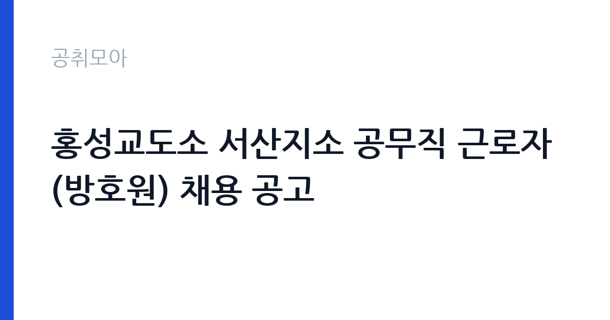

[국가기관] 홍성교도소 서산지소 공무직 근로자(방호원) 채용 공고
법무부 대전지방교정청 홍성교도소 서산지소 · 충남 · 마감 2026-10-30 (D-7) · 출처 나라일터

한눈에 보는 모집 조건
| 기관 | 법무부 대전지방교정청 홍성교도소 서산지소 |
|---|---|
| 공고명 | 홍성교도소 서산지소 공무직 근로자(방호원) 채용 공고 |
| 고용형태 | 공무직 |
| 근무지 | 충남 |
| 게시일 | 2026-10-23 |
| 마감일 | 2026-10-30 (D-7) |
지원자격, 이렇게 읽으세요
- 방호원 1명
- 접수 ~2026-10-30 마감
- 세부 조건은 원문 공고문 확인
모집단위는 방호원 1명입니다. 공무직 근로자는 공무원이 아니라 근로기준법이 적용되는 근로자이지만 기간의 정함이 없는 무기계약으로 채용되는 경우가 많아 정년까지 근무가 가능합니다. 채용은 공무원 시험과 달리 기관의 자체 전형으로 진행되고 인사 규정과 임금표를 적용받습니다. 서류 단계에서 요건을 충족하지 못하면 이후 전형을 준비할 기회가 없습니다. 학력·경력·자격 요건을 항목별로 대조해 표시해 두고, 경력은 재직증명서와 경력증명서로 입증해야 합니다. 증명서에 직무 내용이 구체적으로 적혀 있지 않으면 경력으로 인정받지 못하는 경우가 있으니 발급 전에 기재 내용을 확인하십시오. 자격증은 유효 기간과 등록 상태까지 확인해야 하고, 자격 취득 예정자로 지원하려면 공고문에 예정자 허용 조항이 있는지 반드시 봐야 합니다. 우대 사항에 해당하면 증빙을 반드시 첨부해야 하며, 누락하면 가점 없이 평가됩니다.
이 공고의 포인트
이 공고의 첫 번째 포인트는 고용 형태입니다. 무기계약으로 채용되면 정년까지 근무가 가능해 재계약 부담이 없습니다. 반대로 기간제로 채용되는 공고라면 계약 기간을 먼저 확인해야 합니다. 두 번째는 모집단위가 분명하다는 점입니다. 방호원 1명 단위로 선발하므로 배치 이후 담당 업무의 범위를 미리 가늠할 수 있습니다. 세 번째는 근무지입니다. 충청남도 서산시 기준으로 근무지가 정해져 있어 통근 시간과 비용을 함께 계산해야 합니다. 접수 기간은 2026-10-26부터 2026-10-30까지로 길지 않아, 공고를 늦게 확인하면 준비 시간이 그대로 줄어듭니다. 채용 규모가 크지 않아 면접 비중이 높은 전형이 될 가능성이 있습니다.
전형은 어떻게 진행되나
선발 절차는 원문 공고문에 단계별로 적혀 있습니다. 전형은 서류심사와 면접심사를 기본으로 하고 직무에 따라 필기나 실기, 체력검정이 추가됩니다. 서류 단계에서는 응시자격 충족 여부와 제출서류 형식을 확인하며 이 단계에서 탈락하는 지원자가 적지 않습니다. 면접은 직무 이해도와 경험을 확인하는 방식으로 진행되고 발표는 개별 통보나 홈페이지 게시로 이뤄집니다. 최종합격 이후에는 결격사유 조회와 채용 신체검사가 이어지며 이 절차에서 문제가 확인되면 합격이 취소될 수 있습니다. 구체적인 전형 단계와 배점은 공고문에 표로 정리되어 있으니 원문을 기준으로 준비하십시오. 결과 발표는 문자와 이메일로 동시에 이뤄지지 않는 경우가 있어 두 경로를 모두 확인하십시오.
이런 분께 추천해요
- 충청남도 서산시에서 출퇴근이 가능한 분
- 교정시설 방호 직무 경험이나 관련 자격을 갖춘 분
- 공무직 조건과 근무 기간을 확인하고 지원할 수 있는 분
지원 전 체크리스트
- 응시자격 요건을 충족하는가 — 경력은 증명서로 입증해야 합니다
- 무기계약 여부와 정년 기준을 공고문에서 확인했는가
- 제출서류 목록을 모두 준비했는가 — 누락 시 서류 단계에서 탈락합니다
- 접수 마감 2026-10-30 이전에 접수 방식을 확인해 제출했는가
모집 일정과 제출 타이밍
접수는 2026-10-26에 시작해 2026-10-30에 마감됩니다. 공고 게시일 2026-10-23부터 계산하면 준비 기간은 약 7일입니다. 공고문에 적힌 접수 방법은 '2026.10. 26.(월) ~ 10. 30.(금)'이므로, 온라인·방문·우편 중 어느 방식인지에 따라 제출 일정이 달라집니다. 우편 접수는 도착 기준으로 판정되는 경우가 많아 마감일 소인만 믿으면 안 됩니다. 접수 첫날에 몰리면 시스템 접속이 지연될 수 있으므로 오전 시간대 제출이 안전합니다. 충남 근무지는 산업단지와 농촌 지역이 섞여 있어 통근 조건이 공고마다 다릅니다.
직무 이해하기: 국가기관
교정시설은 수용자 관리와 시설 보안을 24시간 체계로 운영합니다. 서산지소는 홍성교도소의 소속 기관으로 출입 통제와 순찰, 시설 방호 업무를 담당합니다. 교정시설 방호원은 출입 통제와 시설 순찰, 수용자 이동 동선 관리 지원을 맡습니다. 24시간 교대 근무 체계로 운영되며 야간 근무가 포함됩니다. 업무 매뉴얼과 지침이 문서로 정리되어 있어 절차를 익히면 반복 업무는 빠르게 손에 붙습니다.
자기소개서 작성 팁
교정시설 방호 지원서는 직무 연관성을 앞세우는 것이 핵심입니다. 첫 문단에 지원 직무와 본인 경험을 한 문장으로 연결하고, 이어서 담당했던 업무의 규모와 결과를 수치로 제시하십시오. 구성은 지원 동기, 직무 경험, 기여 방안 순서가 무난합니다. 지원 동기는 법무부 대전지방교정청 홍성교도소 서산지소의 사업 중 본인이 관심을 가진 부분을 한 가지로 좁혀 서술하고 추상적인 표현은 줄이십시오. 직무 경험은 담당했던 업무와 규모, 결과를 수치로 제시하면 설득력이 올라갑니다. 기여 방안은 입사 후 첫 3개월과 1년 계획으로 나눠 쓰면 준비도가 드러납니다.
면접 준비 포인트
면접에서는 교정시설 방호 직무를 얼마나 이해하고 있는지, 그리고 법무부 대전지방교정청 홍성교도소 서산지소의 사업을 어느 정도 알고 있는지 확인합니다. 답변은 상황, 판단, 조치 순서로 정리하면 전달이 분명해집니다. 면접은 공고문에 적힌 직무 내용을 얼마나 이해하고 있는지 확인하는 질문으로 시작하는 경우가 많으니, 모집분야 문구를 그대로 읽어 두는 것이 도움이 됩니다.
급여·근무조건 읽는 법
공무직 근로자는 공무원이 아니라 근로기준법이 적용되는 근로자이지만, 기간의 정함이 없는 무기계약으로 채용되면 정년까지 근무할 수 있습니다. 보수는 소속 기관의 공무직 임금표를 적용받아 기본급에 정액급식비·명절휴가비·복지포인트·초과근무수당이 더해지는 구조입니다. 2026년 적용 최저임금은 시급 10,320원, 월 환산 2,156,880원(주 40시간·209시간 기준)으로 고용노동부 고시 제2025-47호로 확정됐으므로 이보다 낮은 조건은 나올 수 없습니다. 이번 공고는 보수표를 본문에 싣지 않고 첨부 공고문에 붙임 형태로 제시하는 경우가 많아, 기본급과 수당을 나눠 확인해야 실제 총액이 보입니다. 이번 공고 본문에는 연봉·월급 실액이 제시되지 않아 구체적인 금액은 첨부 공고문의 처우 항목에서 확인해야 합니다. 공고문에 금액이 제시되지 않은 항목은 원문 보수표나 처우 설명에서 확인해야 하며 확인되지 않은 수치는 쓰지 않는 것이 원칙입니다. 비교할 때는 월 급여뿐 아니라 상여·명절휴가비·복지포인트·초과근무수당까지 포함한 연간 총액으로 계산하십시오. 기간제라면 계약 기간 동안의 총액을, 무기계약이라면 호봉 상승과 정년까지의 누적 소득을 기준으로 판단하는 편이 정확합니다.
자주 묻는 질문
- 선발 인원과 직급은 어떻게 되나요?
이번 공고의 모집단위는 방호원 1명입니다. 직종별 인원과 직급은 공고문 모집분야 항목에 표로 제시되어 있으니 원문에서 확인하십시오. - 근무지는 어디인가요?
충청남도 서산시입니다. 세부 근무지와 출퇴근 조건은 원문 공고문의 근무예정지 항목에서 확인할 수 있습니다. - 보수는 얼마인가요?
공무직 신분에 따라 법무부 대전지방교정청 홍성교도소 서산지소의 임금 규정 또는 보수규정을 적용받습니다. 본문에 확정 금액이 없으므로 첨부 공고문 처우표에서 기본급과 수당을 나눠 확인하십시오.
함께 보면 좋은 공고
[국가기관] 2026년 국립수목원 공무직근로자 채용공고 — 마감 2026-11-06[국가기관] 2026년 통일부 전문임기제 다급(영상PD) 경력경쟁채용 공고 — 마감 2026-11-02[국가기관] 2026년 제3회 공무직 근로자(행정사무원, 경비원, 청소원) 채용 공고 — 마감 2026-11-03출처: 나라일터 공개정보를 바탕으로 공취모아가 정리한 안내글입니다. 모집 조건·일정은 변경될 수 있으니 지원 전 반드시 원문 공고문을 확인하세요. 본 글은 정보 제공용이며 합격을 보장하지 않습니다.